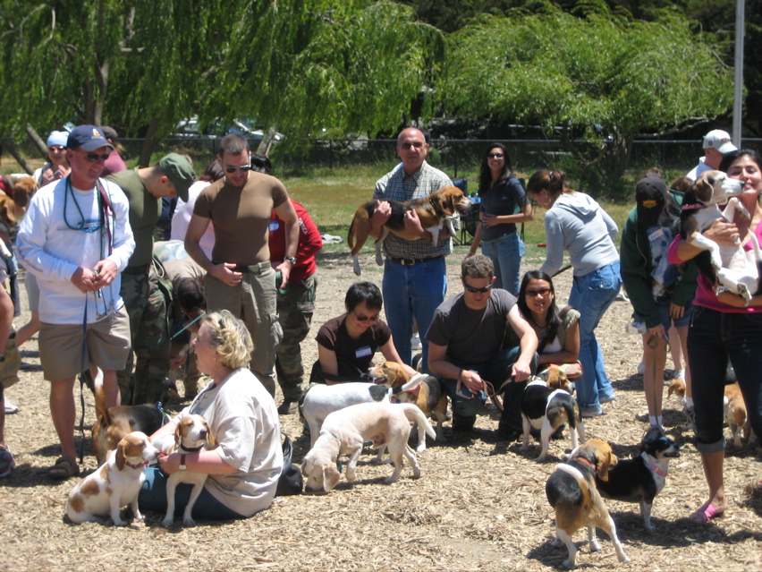

<--Previous
Up

Spring 2007 Beaglefest
A couple of dogs in this picture look a lot like Huxley. Hint: it's easier to look for his mistress. To Huxley's right and Penny's left are neighbors Arrow, Carol and Dan.